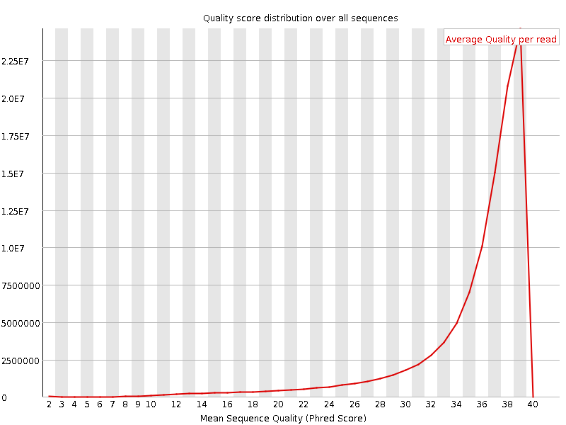
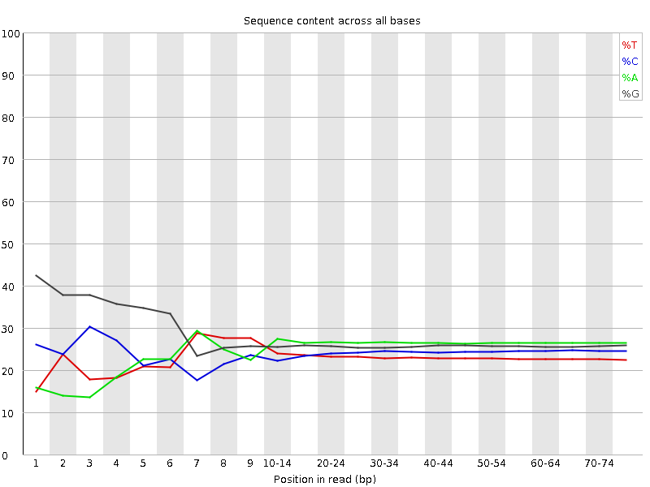
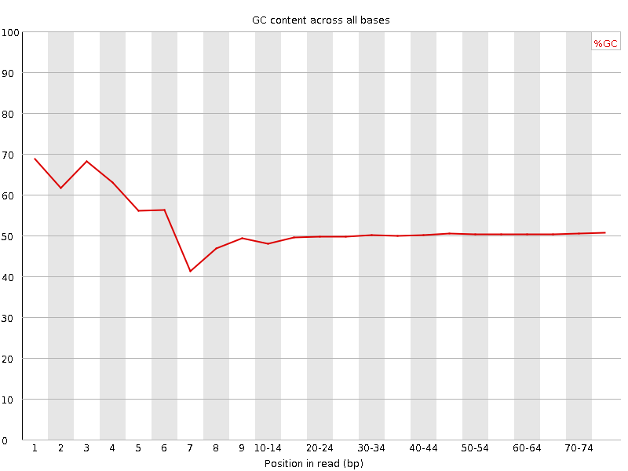
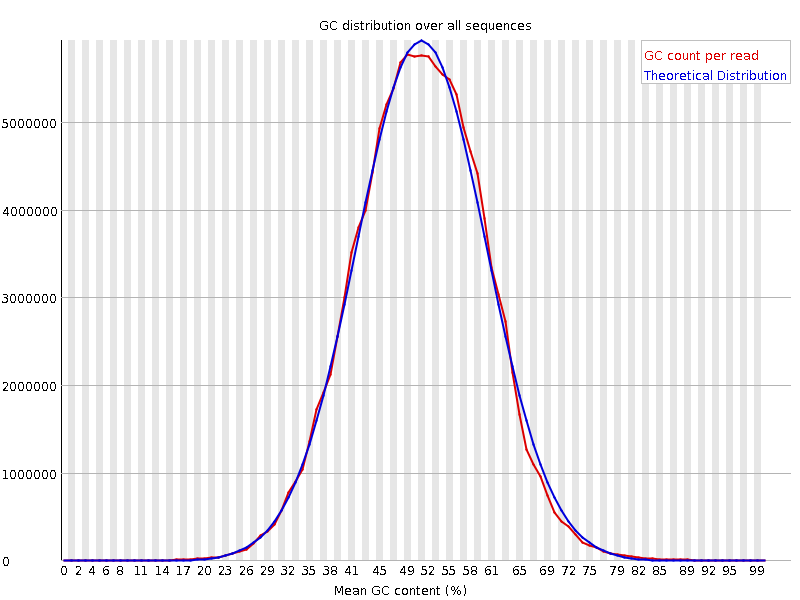
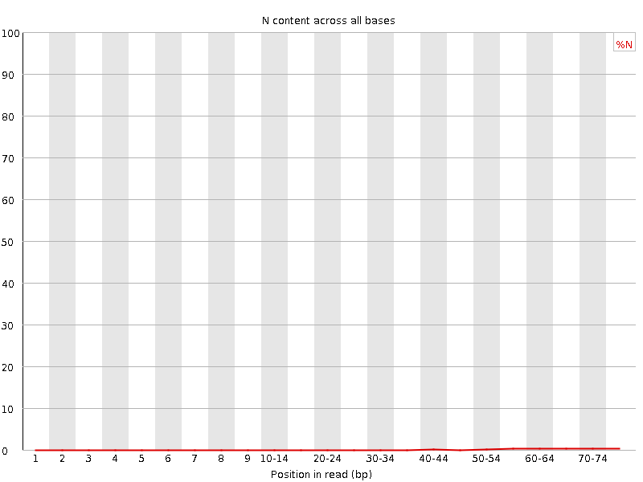
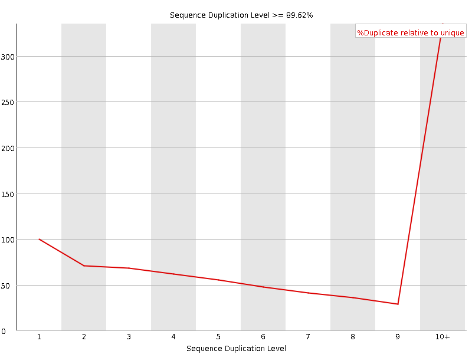
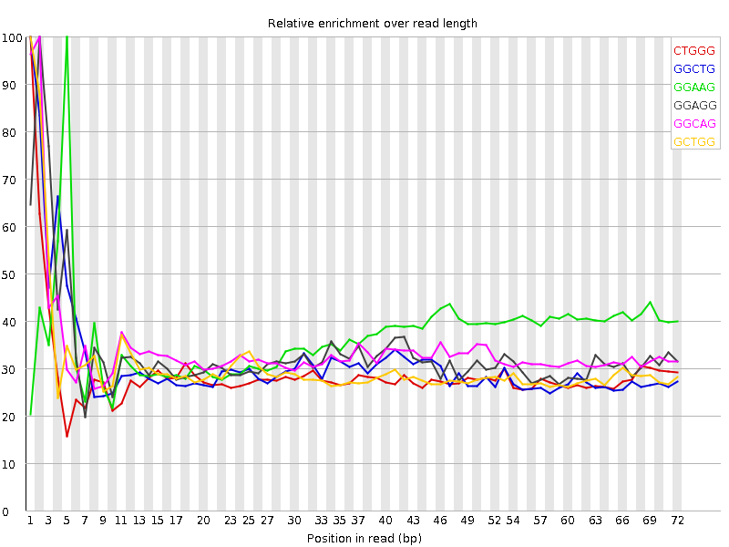

![[OK]](Icons/tick.png) Basic Statistics
Basic Statistics
| Measure | Value |
|---|---|
| Filename | SRR317066_1.fastq |
| File type | Conventional base calls |
| Encoding | Sanger / Illumina 1.9 |
| Total Sequences | 104451454 |
| Filtered Sequences | 0 |
| Sequence length | 76 |
| %GC | 50 |
Per base sequence quality

Per sequence quality scores

![[FAIL]](Icons/error.png) Per base sequence content
Per base sequence content

Per base GC content

Per sequence GC content

Per base N content

Sequence Length Distribution

Sequence Duplication Levels

![[WARN]](Icons/warning.png) Overrepresented sequences
Overrepresented sequences
| Sequence | Count | Percentage | Possible Source |
|---|---|---|---|
| GATCGGAAGAGCGGTTCAGCAGGAATGCCGAGACCGATATCGTATGCCGT | 129111 | 0.12360861917728785 | Illumina Paired End PCR Primer 2 (98% over 50bp) |
Kmer Content

| Sequence | Count | Obs/Exp Overall | Obs/Exp Max | Max Obs/Exp Position |
|---|---|---|---|---|
| CTGGG | 16401035 | 2.0572956 | 7.115809 | 1 |
| GGCTG | 16389150 | 2.0558047 | 6.5589285 | 1 |
| GGAAG | 19518965 | 2.0273995 | 5.5108542 | 5 |
| GGAGG | 19530920 | 1.9765273 | 5.9322133 | 2 |
| GGCAG | 17393400 | 1.9348685 | 5.680862 | 2 |
| GCTGG | 15244965 | 1.9122816 | 6.2367353 | 1 |
| GGGAG | 16920570 | 1.7123601 | 6.6167397 | 2 |
| GGGCA | 14190825 | 1.5786091 | 5.704786 | 1 |
| TGGGG | 13445035 | 1.5342654 | 6.6449986 | 1 |
| GGGGG | 14856890 | 1.4648919 | 8.364426 | 1 |
| GTGGG | 12622210 | 1.4403696 | 9.173255 | 1 |
| GGGGA | 13907745 | 1.4074625 | 7.380251 | 1 |
| GGGTG | 12071255 | 1.3774981 | 5.6670256 | 2 |
| GTGGT | 10400175 | 1.373536 | 5.4100585 | 1 |
| GGGCT | 10199350 | 1.2793752 | 5.065029 | 3 |
| GGGGT | 10794110 | 1.231758 | 6.611022 | 1 |
| GGGGC | 10341075 | 1.1208055 | 5.2092943 | 2 |
| CGGGG | 7120720 | 0.771771 | 5.773878 | 1 |